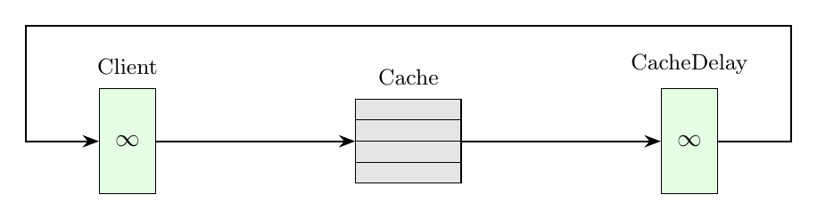

Tutorial 6: Queueing Network with Caching
This example shows how to include a cache with Least Recently Used (LRU) replacement policy in a queueing network. Requests choose the item to read according to a Zipf popularity distribution, and the cache switches the resulting hit or miss into different classes (HitClass or MissClass) to keep track of the read outcome.

% Example 6: A queueing network with caching
model = Network('Model');
nItems = 1000;
cacheSize = 50;
% Block 1: nodes
clientDelay = Delay(model, 'Client');
cacheNode = Cache(model, 'Cache', nItems, cacheSize, ReplacementStrategy.LRU());
cacheDelay = Delay(model, 'CacheDelay');
% Block 2: classes
clientClass = ClosedClass(model, 'ClientClass', 1, clientDelay, 0);
hitClass = ClosedClass(model, 'HitClass', 0, clientDelay, 0);
missClass = ClosedClass(model, 'MissClass', 0, clientDelay, 0);
clientDelay.setService(clientClass, Immediate());
cacheDelay.setService(hitClass, Exp.fitMean(0.2));
cacheDelay.setService(missClass, Exp.fitMean(1));
cacheNode.setRead(clientClass, Zipf(1.4,nItems));
cacheNode.setHitClass(clientClass, hitClass);
cacheNode.setMissClass(clientClass, missClass);
% Block 3: topology
P = model.initRoutingMatrix;
P{clientClass, clientClass}(clientDelay, cacheNode)=1;
P{hitClass, hitClass}(cacheNode, cacheDelay)=1;
P{missClass, missClass}(cacheNode, cacheDelay)=1;
P{hitClass, clientClass}(cacheDelay, clientDelay)=1;
P{missClass, clientClass}(cacheDelay, clientDelay)=1;
model.link(P);
% Block 4: solution
ssaAvgTable = SSA(model,'samples',2e4,'seed',23000).avgNodeTable()// Example 6: A queueing network with caching
val model = Network("Model")
val nItems = 1000
val cacheSize = 50
// Block 1: nodes
val clientDelay = Delay(model, "Client")
val cacheNode = Cache(model, "Cache", nItems, cacheSize, ReplacementStrategy.LRU)
val cacheDelay = Delay(model, "CacheDelay")
// Block 2: classes
val clientClass = ClosedClass(model, "ClientClass", 1, clientDelay, 0)
val hitClass = ClosedClass(model, "HitClass", 0, clientDelay, 0)
val missClass = ClosedClass(model, "MissClass", 0, clientDelay, 0)
clientDelay.setService(clientClass, Immediate())
cacheDelay.setService(hitClass, Exp.fitMean(0.2))
cacheDelay.setService(missClass, Exp.fitMean(1.0))
cacheNode.setRead(clientClass, Zipf(1.4, nItems))
cacheNode.setHitClass(clientClass, hitClass)
cacheNode.setMissClass(clientClass, missClass)
// Block 3: topology
val P = model.initRoutingMatrix()
P.set(clientClass, clientClass, clientDelay, cacheNode, 1.0)
P.set(hitClass, hitClass, cacheNode, cacheDelay, 1.0)
P.set(missClass, missClass, cacheNode, cacheDelay, 1.0)
P.set(hitClass, clientClass, cacheDelay, clientDelay, 1.0)
P.set(missClass, clientClass, cacheDelay, clientDelay, 1.0)
model.link(P)
// Block 4: solution
SSA(model, "samples", 20000, "seed", 23000).avgTable.print()from line_solver import *
model = Network('Model')
nItems = 1000
cacheSize = 50
# Block 1: nodes
clientDelay = Delay(model, 'Client')
cacheNode = Cache(model, 'Cache', nItems, cacheSize, ReplacementStrategy.LRU)
cacheDelay = Delay(model, 'CacheDelay')
# Block 2: classes
clientClass = ClosedClass(model, 'ClientClass', 1, clientDelay, 0)
hitClass = ClosedClass(model, 'HitClass', 0, clientDelay, 0)
missClass = ClosedClass(model, 'MissClass', 0, clientDelay, 0)
clientDelay.set_service(clientClass, Immediate())
cacheDelay.set_service(hitClass, Exp.fit_mean(0.2))
cacheDelay.set_service(missClass, Exp.fit_mean(1.0))
cacheNode.set_read(clientClass, Zipf(1.4, nItems))
cacheNode.set_hit_class(clientClass, hitClass)
cacheNode.set_miss_class(clientClass, missClass)
# Block 3: topology
P = model.init_routing_matrix()
P.set(clientClass, clientClass, clientDelay, cacheNode, 1.0)
P.set(hitClass, hitClass, cacheNode, cacheDelay, 1.0)
P.set(missClass, missClass, cacheNode, cacheDelay, 1.0)
P.set(hitClass, clientClass, cacheDelay, clientDelay, 1.0)
P.set(missClass, clientClass, cacheDelay, clientDelay, 1.0)
model.link(P)
# Block 4: solution
ssaAvgTable = SSA(model, samples=20000, seed=23000).avg_table()